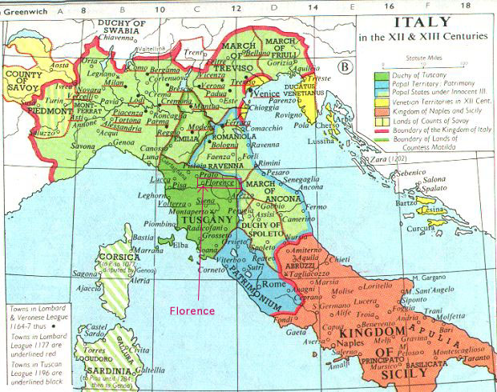

|
Gold florin of Florence |
Florence (1300-1500) |
|


Florence is located in the north-western part of Italy, about 85 miles southwest of Ravenna. It rose to prominence economically, politically, and culturally at a time of great political instability in Italy, whose history in the later Middle Ages went in quite different directions from those taken by the kingdoms of northern Europe.
|
 |